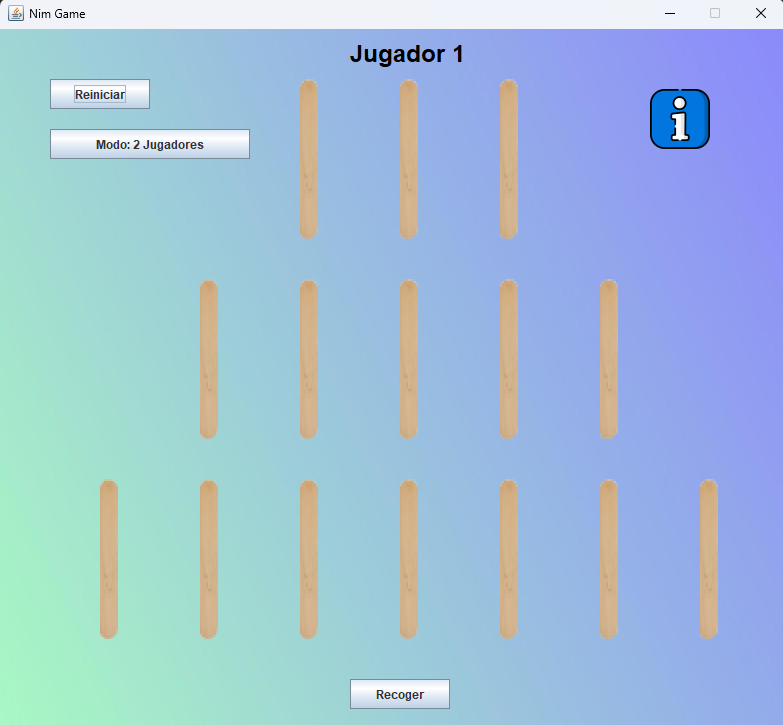

David Beamonde Salinas
Los erorres son soluciones de proximos proyectos.
Hola, me llamo David Beamonde y soy programador.
Soy de La Rioja. Me gusta la programación porque puedo crear las aplicaciones que necesite.
Comencé programando plugins de Minecraft porque me gustaba jugar. Aprendí que se podían crear complementos para mejorar el juego y yo quería añadir varias funciones que no existían en el juego base. A raiz de eso, comencé mis estudios en la programación, y cuatro años después ya he completado el grado superior.
Estos son algunos de mis proyectos:
Lenguajes y tecnologías que he utilizado en mis proyectos:
MineBank
MineBank es un plugin de Minecraft que añade un sistema de bancos, con posibilidad de guardar y sacar dinero. Además, cuanto más dinero tengas en el banco, más dinero obtendrás de intereses.
Ver más Descargar
Stock Manager
Stock Manager es una aplicación para la gestión de inventario. Permite insertar, modificar y eliminar cualquier dato, además, cuenta con varios apartado donde puedes: ver el inventario en tiempo real y ver los cambios realizados.
Ver más Descargar
Nim Game
Nim Game es un juego inspirado en el famoso juego llamado El juego de los 15 palos, presentado por Don Rogelio en el programa El Hormiguero dirigido por Pablo Motos.
Ver más Descargar
Gravity Platform Game
Gravity Platform Game es un juego de plataformas con 4 niveles. Un jugador tiene que ir trepando por las plataformas móviles hasta alcanzar la estrella situada en la cima. Pero con cuidado, de vez en cuando caen bombas que te quitan vida.
Ver más Descargar Windows Descargar Linux